بيئي
المساهمة في الحد من وجود النفايات البلاستيكية في الفضاءات المستهدفة.

NDB CLEAN
مبادرة بيئية تعمل على تحويل التعامل مع النفايات البلاستيكية من مشكلة إلى فرصة لبناء حلول محلية أكثر استدامة لمدينة نواذيبو.
نواذيبو × البيئة × الابتكار
يبدأ NDB CLEAN من مشكلة نراها في مدينتنا: النفايات البلاستيكية. لكن الفكرة لا تتوقف عند جمعها؛ بل تبحث عن طريقة لإعادة توظيفها ضمن حلول تخدم البيئة والفضاء الحضري.
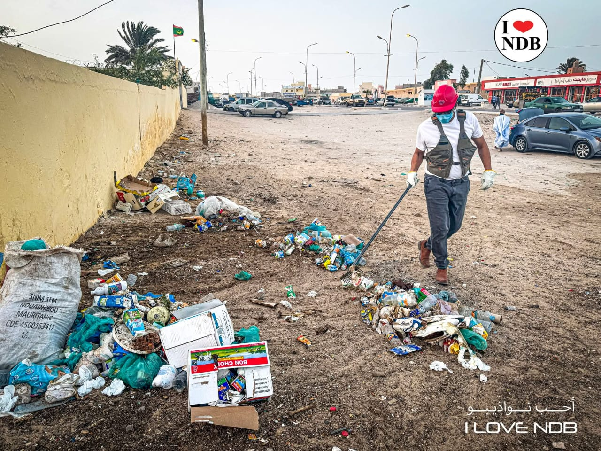
التحدي
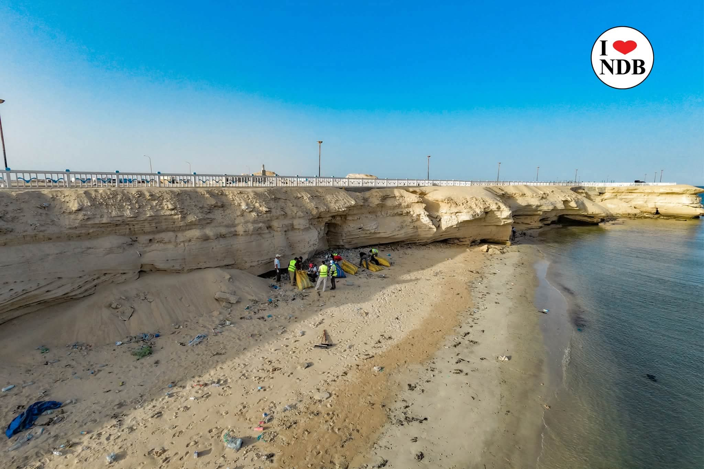
البلاستيك الذي نراه في الشوارع والشواطئ يمكن أن يصبح جزءًا من حل جديد.
يعمل NDB CLEAN على تطوير مقاربة تبدأ من جمع العبوات البلاستيكية وإعادة التفكير في قيمتها واستخدامها، بدل أن تبقى مجرد نفايات.
عبوات بلاستيكية تنتشر في فضاءات مختلفة.
جمع البلاستيك يفتح الباب أمام استخدام جديد.
تطوير طريقة لتحويل المادة إلى منتج ذي استخدام حضري.
الاستجابة
عندما نجمع البلاستيك، نمنحه فرصة جديدة. NDB CLEAN يعمل على تطوير مسار يجمع بين العمل الميداني وإعادة التوظيف والحلول الحضرية.
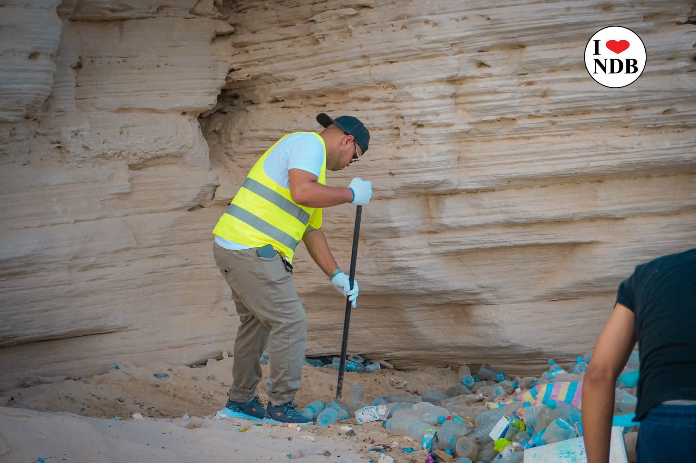
إعادة التوظيف
فكرة محلية قيد التطوير تهدف إلى إعطاء النفايات البلاستيكية استخدامًا جديدًا يخدم المدينة.
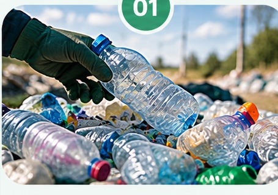
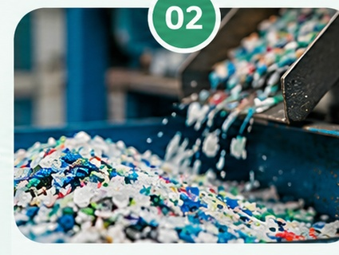
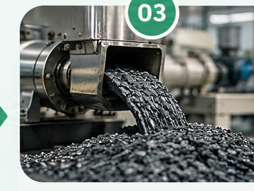
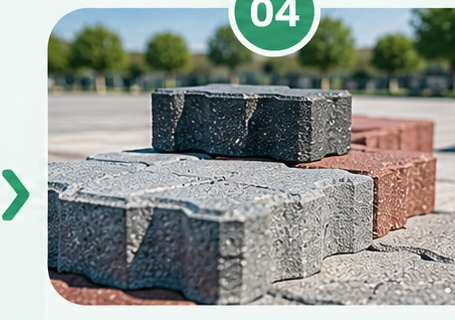
العمل الميداني
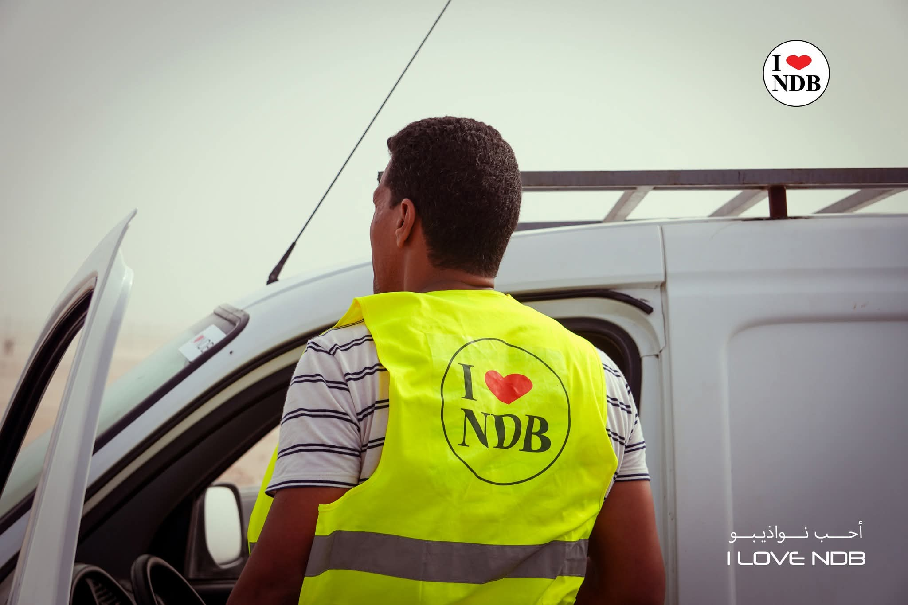
التنظيف ليس مجرد صورة. إنه عمل يبدأ بالأشخاص الموجودين في الميدان.
تُظهر أنشطة NDB CLEAN قيمة المشاركة الجماعية في جمع النفايات وتنظيف الفضاءات التي نعيش فيها.
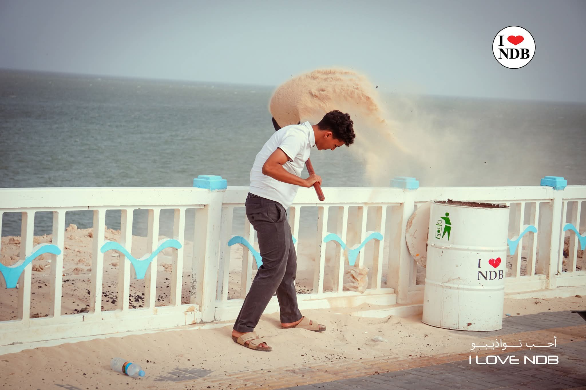
من البلاستيك إلى قيمة
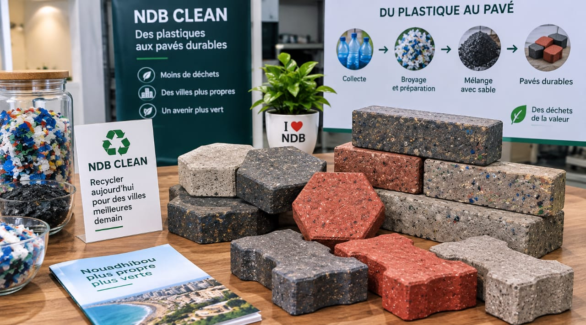
تحويل النفايات البلاستيكية المجمعة إلى مواد قابلة للاستخدام.
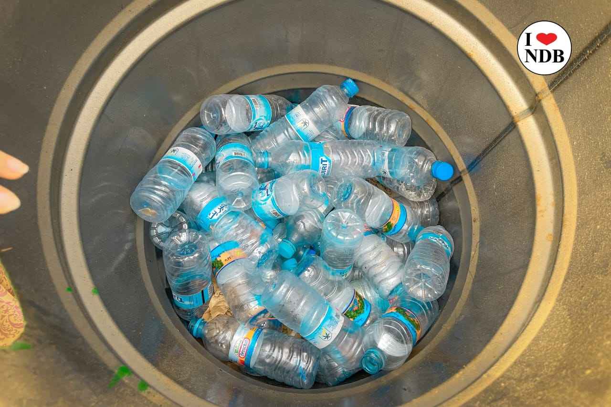
جمع وفرز النفايات البلاستيكية وإعدادها لإعادة التدوير.
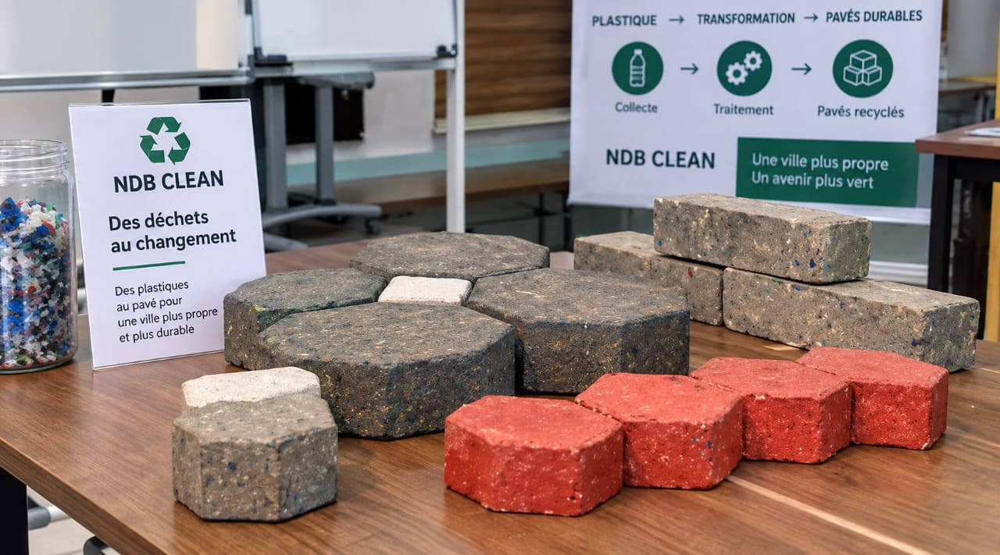
إنتاج منتجات مختلفة ذات قيمة من البلاستيك المعاد تدويره.
رابط متين وصديق للبيئة للاستخدام في الحدائق والأرصفة والمرافق العامة.
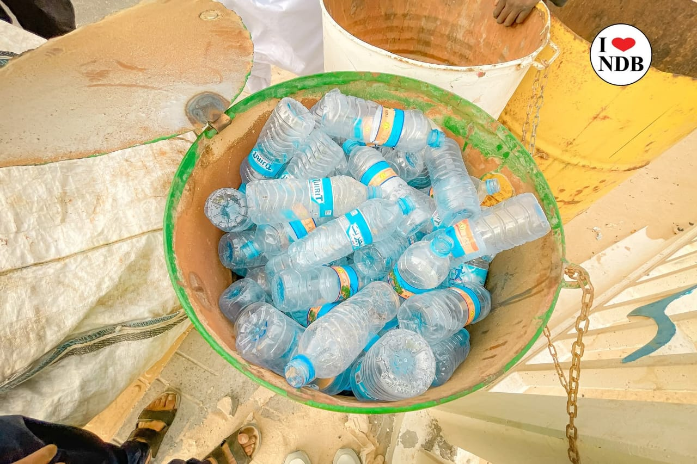
إمكانية إنتاج الطوب والبلاط بأحجام وأشكال مختلفة حسب الحاجة.
استخدام البلاستيك المعاد تدويره لبناء بيئة أكثر نظافة واستدامة.
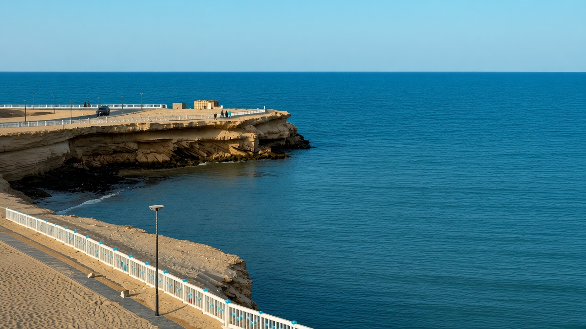
نواذيبو
لأن حماية المدينة تبدأ من الأماكن التي نعيش فيها، ومن الشوارع التي نعبرها، ومن الشواطئ التي نعتز بها.
الأثر
أثر المشروع لا يقاس فقط بما يتم جمعه، بل بما يمكن أن يتغير بعد ذلك.
المساهمة في الحد من وجود النفايات البلاستيكية في الفضاءات المستهدفة.
تشجيع المشاركة والمسؤولية المشتركة تجاه نظافة المدينة.
البحث عن طرق جديدة لإعادة توظيف النفايات ضمن حلول تخدم الفضاء الحضري.
تطوير نموذج محلي لإعادة التفكير في قيمة المواد التي نعتبرها نفايات.
من الميدان
عن المشروع
NDB CLEAN مبادرة بيئية مرتبطة بـ I ♥ NDB، تهدف إلى تحويل الوعي بمشكلة النفايات إلى عمل ميداني وحلول عملية.
بدأ العمل من الميدان، ومع تطور المشروع يجري تطوير مسار لإعادة توظيف العبوات البلاستيكية ضمن حلول جديدة للمدينة.
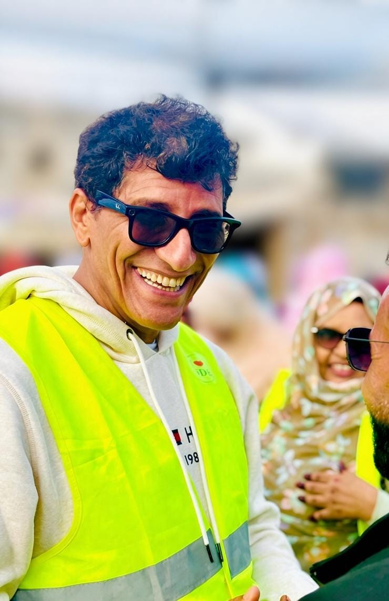
NDB CLEAN
أنت من جعلت هذه الرؤية واقعًا.
المدير التنفيذيالمستقبل يبدأ من اليوم
وفكرة تتحول إلى عمل.